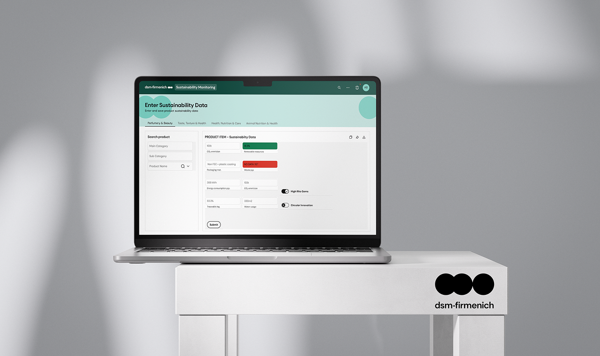
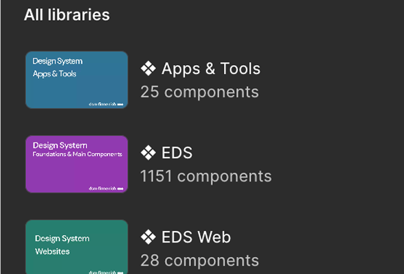
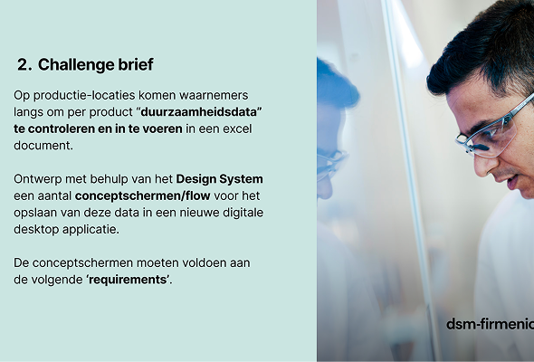

PRODUCT SUSTAINABILITY MONITORING X DSM

Design System | UI/UX | Figma
During my UI/UX Design minor, I had the opportunity to attend a guest lecture by Toine Aerts, Senior Product
Designer at DSM-Firmenich. He shared his experience working in UI/UX design within a large international
company, and gave us insight into how DSM-Firmenich uses a Design System within Figma to keep their products
consistent and on-brand across teams.
As part of his session, Toine presented us with a real-world case to work on:
How do you turn a manual, error-prone Excel workflow into a digital tool that fits a real design system?


